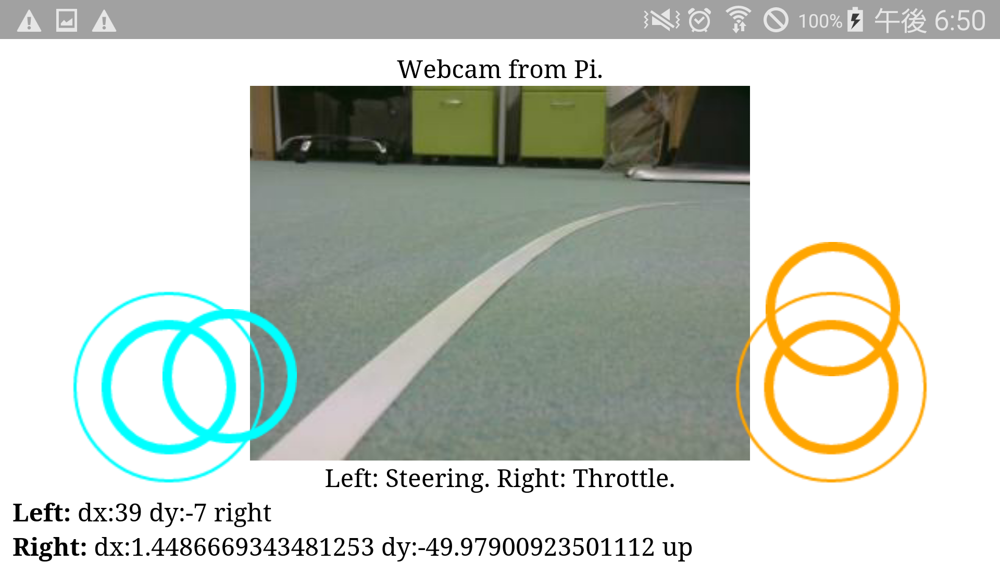
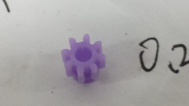

FaboDrive：Webコントローラ/API
目標
Webブラウザから制御する/プログラムから制御する
画像

実行環境
- Fabo TYPE1 ロボットカー
- Fabo #605 Motor Shield Raspberry Pi Rev 1.0.1
- Fabo #902 Kerberos ver 1.0.0
- Fabo #1202 Robot Car Rev. 1.0.1
- Tower Pro SG90
- Raspberry Pi3
- Stretch Lite or Jessie Lite
- docker
- Ubuntu
- Python 2.7
- FaBoPWM-PCA9685-Python
- FaBoGPIO-PCAL6408-Python
- Ubuntu
- Stretch Lite or Jessie Lite
- Fabo #605 Motor Shield Raspberry Pi Rev 1.0.1
Webコントローラ
API
その他
実行方法
1. ロボットカーのRaspberry Pi3にsshでログインします
USER:pi
PASSWORD:raspberry
ssh pi@192.168.xxx.xxx
2. rootになってdockerコンテナIDを調べます
sudo su
docker ps -aCONTAINER ID IMAGE COMMAND CREATED STATUS PORTS NAMES
da6ea200cd4e naisy/fabo-jupyter-armhf "/bin/bash -c 'jupyt…" 8 minutes ago Up 8 minutes confident_lalande
STATUSがUpになっているコンテナIDをメモします。
STATUSがExitedになっている場合は、docker start CONTAINER_IDで起動します。
docker start da6ea200cd4e
3. dockerコンテナにログインします
docker exec -it CONTAINER_ID /bin/bash
docker exec -it da6ea200cd4e /bin/bash
CONTAINER_IDにはベースイメージがnaisy/fabo-jupyter-armhfのda6ea200cd4eを使います。
4. FaboDriveのディレクトリに移動します
cd /notebooks/github/RobotCarAI/fabodrive/
lstotal 32
388005 4 ./ 388006 8 controller.py 521077 4 lib/ 655069 4 templates/
254266 4 ../ 388007 4 fabolib/ 521080 4 static/
5. FaboDriveを起動します
USBカメラを使う場合
python controller.py --use-usb
Piカメラを使う場合
python controller.py
6. スマホのブラウザでアクセスします
http://192.168.xxx.xxx:8080
タッチパッド対応しているAndroid/iOSは左右の仮想ジョイスティックで操作出来ます。
ただし、iOSの場合は2本指で拡大縮小になるため、1本指を置いて2秒程待ってから2本指で操作してください。
タッチパッドに対応していないPCはASDWキーで操作できます。
ブラウザでのアクセス中は秒間10回、車両制御命令を送り続けます。
7. 終了
Ctrl + c でcontroller.pyを終了します
制御API
Webコントローラは制御APIを搭載しています。
非常にシンプルなAPIで、GETメソッドとPOSTメソッドにのみ対応しています。
| パラメータ | 単位 | 可能範囲 | 用途 |
|---|---|---|---|
| angle | float型 degree | -40 to 40 | ステアリング制御 |
| speed | float型 | -100 to 100 | モーター制御 |
angleはラジアンではなく、度になります。
angleはマイナスが右、プラスが左になります。
speedはマイナスが後進、プラスが前進になります。
speedは前進後進を切り替える場合は、モーターの回転が止まるのを待ってから切り替えてください。
使用例
| 操作 | URL | メソッド |
|---|---|---|
| 停止 | http://192.168.xxx.xxx:8080/drive?angle=0&speed=0 | GET/POST |
| 前進(speed = 50) | http://192.168.xxx.xxx:8080/drive?angle=0&speed=50 | GET/POST |
| 後進(speed = -50) | http://192.168.xxx.xxx:8080/drive?angle=0&speed=-50 | GET/POST |
| 右 | http://192.168.xxx.xxx:8080/drive?angle=-40&speed=50 | GET/POST |
| 左 | http://192.168.xxx.xxx:8080/drive?angle=40&speed=50 | GET/POST |
GETも対応しているので、ブラウザのURLでも試すことが出来ます。
トラブルシューティング
- 【発生したエラー】
python controll.py実行時に、以下のエラーが出る。
1 2 3 4 5 6 7 8 9 10 11 12 13 | |
-
【原因】
Fabo #605のPWM制御を行うPCA9685チップのアドレスが見つからない。 -
【解決策】
Fabo #605に電源ケーブルを接続して、dockerコンテナを再起動する。
i2cが利用可能であることを確認する。
dockerコンテナ内で実行：
1 | |
正常な出力
1 2 3 4 5 6 7 8 9 | |
-
【発生したエラー】
車両の挙動が変。 -
【原因】
サーボモーターの故障。 -
【解決策】
新品のサーボモーターに交換します。
故障したサーボモーターは、動きがおかしくなるだけではなく、発熱して大電流を消費するので危険です。
異常を感じたときはプログラムの問題を疑うよりも先にサーボが故障していないか確認してください。 -
【発生したエラー】
カラカラ音がする。 -
【原因】
モーターに付けているピニオンギアの破損。 -
【解決策】
新品のピニオンギアと交換してください。
見た目ではわかりづらいですが、亀裂が入っているとカラカラ異音がします。
プラスチック製のピニオンギアは走行しなくても2年位で亀裂が入るようです。

ディレクトリとファイルについて
- ディレクトリについて
- document/ ドキュメント関連
- fabolib/ Fabo製基板関連
- lib/ SPIライブラリ
- templates/ HTMLテンプレートファイル
- static/ JavaScript
- document/ ドキュメント関連
- ファイルについて
- README.md このファイル
- controller.py ブラウザからの制御とAPI
- README.md このファイル